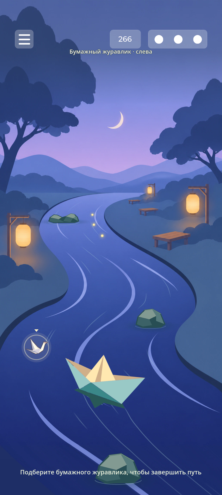
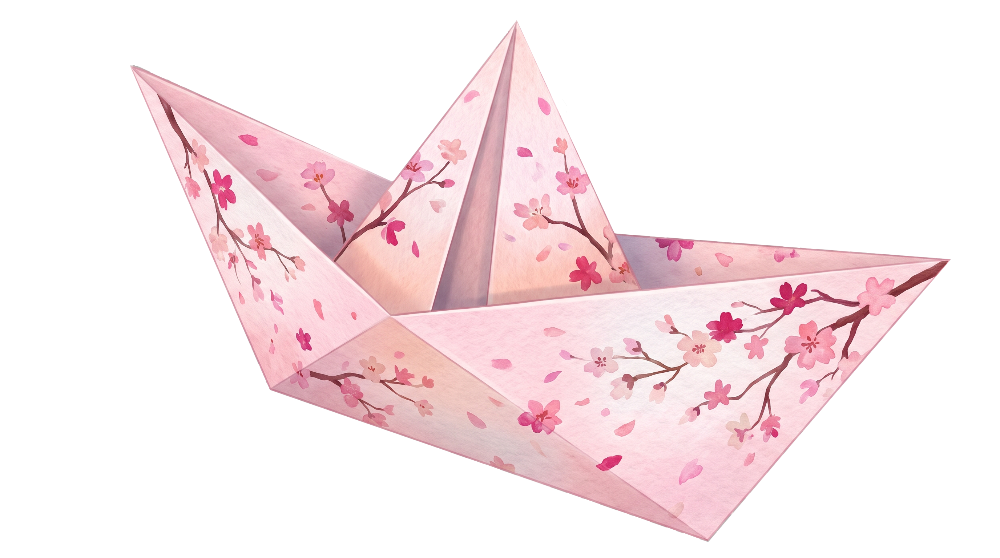
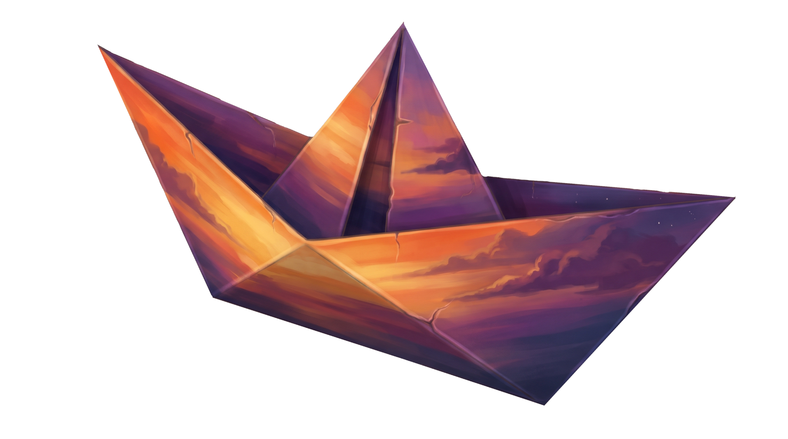

Обновление 0.38
Река фонарей
В сумерках над причалами зажигаются фонари. На десятой реке вас ждёт бумажный журавлик.

твой шепчущий
путь к свету

«Whisper of the River» — медитативное инди-приключение. Вы отправляетесь в плавание на маленьком бумажном кораблике. Следуйте за течением волшебной реки, любуйтесь берегами и собирайте свет.
Какой кораблик отправится в путь сегодня? Собирайте огоньки, открывайте новые узоры и выбирайте свой кораблик перед каждым заплывом.





В сумерках над причалами зажигаются фонари. На десятой реке вас ждёт бумажный журавлик.

За низкими песчаными косами открывается море. Поймайте отблеск перламутровой раковины на воде.

Медные кроны отражаются в бирюзовой воде. Среди огоньков плывёт находка с двумя янтарными крыльями.
Игра проходит тестирование на Android. Здесь появятся ссылки на магазины после выхода.